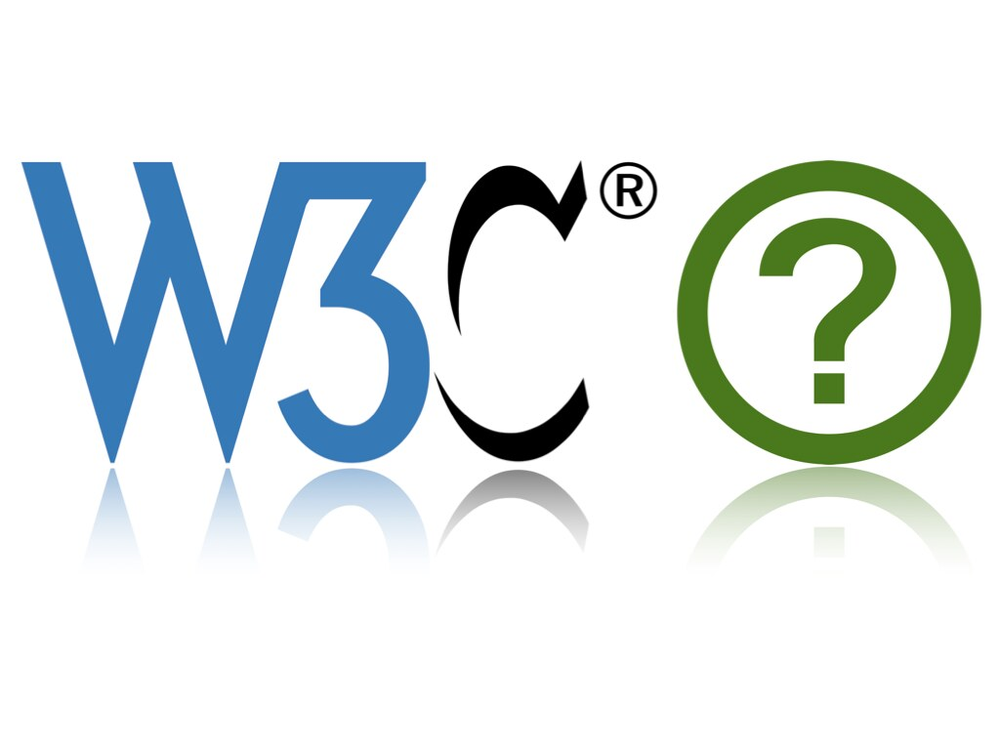

O que é a Web:
A Web é a abreviação de “World Wide Web”, um sistema de documentos interligados que podem ser acessados na internet. A forma mais comum de utilização da Web é pela visualização de páginas da web em navegadores. Ela é construída sobre tecnologias como HTML, CSS e JavaScript e usa protocolos da web como HTTP / HTTPS para fazer a interface entre o usuário da web e o servidor web.

O que é o WWW:
WWW, que significa World Wide Web, é um sistema de informações interconectadas acessadas pela Internet. Muitas pessoas costumam confundir o WWW com a Internet, mas na verdade o WWW é uma das aplicações que usam a infraestrutura da Internet. O domínio “www” é um subdomínio comum usado para indicar que um site está sendo acessado através da Web.

O que é o W3C?
World Wide Web Consortium : esta é uma organização internacional que cria padrões e políticas a fim de garantir que a Web seja acessível, interoperável e sustentável. O W3C foi fundado por Tim Berners-Lee com o intuito de promover padrões técnicos para melhorar a qualidade e a uniformidade da Web.
